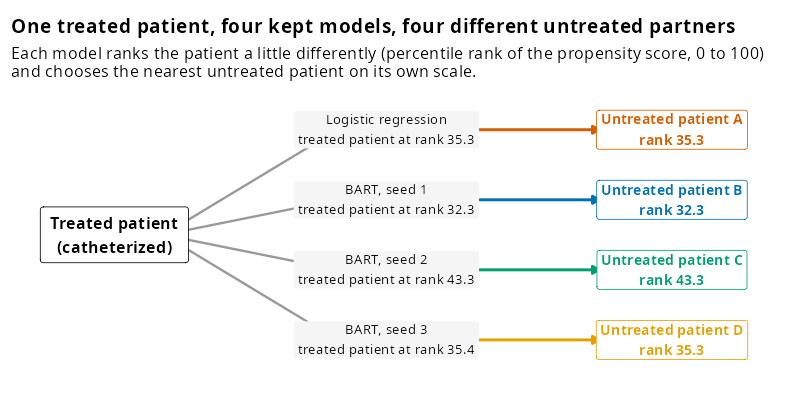
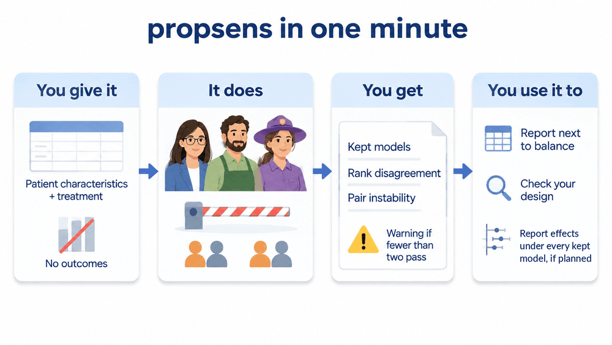

How much does a matched design depend on which of several similarly good propensity models is used?


A matched study estimates each patient’s propensity score with one model, usually logistic regression, and pairs every treated patient with an untreated patient who has a similar score. Another model that fits the data about as well (in propsens: a log-loss within 5 % of the best model’s and a matched balance within 0.10 of the best), such as Bayesian additive regression trees (BART) or a generalized random forest (GRF), can order the patients differently and so pick different partners. propsens describes how much the matched design depends on that choice, without looking at outcomes, so it can be run at the design stage, next to the usual balance table.

propsens in one minute

| You give it | Your study data (patient characteristics and treatment, no outcomes) and your matching settings, or your existing MatchIt object. |
| It does | Fits seven propensity models, keeps those that fit and balance about as well as the best one (the quality gate), and repeats your matching with each kept model. |
| You get | The list of kept models; rank disagreement (how much patients’ positions move between kept models); pair instability (how often kept models choose different partners); the balance of each model’s match; an R warning if fewer than two models pass, or if the kept models are seeds of one algorithm. |
| You use it to | (1) Report it next to your balance table, at the design stage, before looking at outcomes. (2) If a warning appears, revisit the matching design first. (3) Decide before looking at outcomes whether you will report the effect estimate under each kept model, and then report all of them, as in the heart catheterization example. |
library(propsens)
# Replace the placeholders <...> with your own treatment, covariates and data:
result <- propensity_sensitivity(<treatment> ~ <covariate 1> + <covariate 2>,
data = <your data frame>, replace = FALSE, caliper = 0.2)
# Or give your existing MatchIt object (its matching settings are read from the object):
result <- propensity_sensitivity(<your matchit object>)Example result (right heart catheterization)
On the public right heart catheterization data (Connors et al., JAMA 1996; 5,735 patients, 2,184 catheterized), matching 1:1 without replacement with a caliper of 0.2 standard deviations of the logit:
- 4 of 7 models were kept by the quality gate: logistic regression and BART with seeds 1, 2 and 3. The three GRF fits were excluded.
- Rank disagreement was 0.047 (primary summary): the standard deviation of a treated patient’s percentile rank across the four kept models averaged 4.7 points on the 0 to 100 scale. No thresholds for a “large” value exist yet.
- Pair instability was 0.64 of a possible 0.75 with four models (exploratory). This is expected when many untreated patients have similar scores, and it does not by itself mean the matched groups differ; a different partner with the same characteristics is harmless.
- Odds ratios of death within 30 days. Matching with each kept model gave odds ratios between 1.27 and 1.38, all with wide and overlapping 95 % confidence intervals. The two ends of this range are two BART fits that differ only in their random seed, and each matched sample keeps a different 78 to 82 % of the catheterized patients, so the estimates describe slightly different groups. The example shows that the estimate is not identical across kept models; it does not show how much of the difference is due to the model, to the seed, or to chance. The odds ratios are shown only as an illustration; they are not part of the diagnostic, and a larger disagreement does not by itself mean a larger change in the estimate.
The step-by-step article walks through this example.
Installation
# install.packages("remotes")
remotes::install_github("mostafa-abbas/propsens")On Linux the packages ‘dbarts’ (BART) and ‘grf’ are compiled from source, which takes several minutes and needs a C++ compiler. The faster model set (algorithms = c("logistic_regression", "random_forest", "gradient_boosting")) also needs ‘randomForest’ and ‘gbm’. To build the vignettes as well, add build_vignettes = TRUE; they are also on the website.
Run time. With the default seven models, propensity_sensitivity() takes about a minute for 614 patients and 7 covariates, and about 16 minutes for 5,735 patients and 50 covariates on one core; it grows with the number of patients and covariates. On Linux and macOS, cores = 4 runs the models in parallel (on Windows the run is serial).
What it does
propsens takes the analyst’s matched design (a MatchIt object, or a formula and a data frame) and:
- refits the propensity model with logistic regression, BART and GRF (three seeds for each tree algorithm, cross-fitted scores), seven models in all;
- re-matches with each model, using the analyst’s own matching options;
- applies a quality gate: a model is kept only if its cross-fitted log-loss is within 5 % of the best model’s and its matched sample is about as well balanced (largest standardized mean difference on main terms within 0.10 of the best model’s and at most 0.25);
- reports, for the kept models, rank disagreement (primary: how differently the models order the treated patients), pair instability (exploratory: how often they choose different partners), the bootstrap rank instability of the logistic model and the spread of balance across models (descriptive).
The fold split and every tree model depend on seed, and on small data the kept models and the values can change noticeably from one seed to the next. Rerun with two or three values of seed and report all of them; seed_sensitivity() does this in one call.
A run where the gate keeps several algorithms (simulated data)
These data are simulated with simulate_example_data() (Scenario 1: six normal covariates, logistic treatment model, 1,000 patients), so the output shows what the summaries look like when the gate keeps models from several algorithms. The output was computed once with data-raw/simulated_default_output.R.
library(propsens)
simulated <- simulate_example_data(n = 1000, scenario = "S1", seed = 1)
propensity_sensitivity(treat ~ x1 + x2 + x3 + x4 + x5 + x6, data = simulated)Propensity model sensitivity
1. Quality gate: 7 of 7 models kept (3 algorithms: logistic regression, BART,
GRF); log-loss within 5 % of the best; relative balance rule: max |SMD|
main terms at most 0.10 above the best model's and at most 0.25 (limit here
0.247).
Treated patients kept by each kept model: logistic_regression_1 100 %,
bart_1 100 %, bart_2 100 %, bart_3 100 %, grf_probability_1 100 %,
grf_probability_2 100 %, grf_probability_3 100 %
2. Rank disagreement (primary; study mean over treated): 0.0588
Equal weight per algorithm (exploratory): 0.0678
Between/within-algorithm ratio (exploratory; median over treated): 4.12.
Disagreement between algorithms divided by disagreement between seeds of
the same algorithm; with three seeds per algorithm, seed noise alone
gives about 0.4.
Pair instability (exploratory; study mean over treated): 0.824 of a
possible 0.857 with 7 models. It is high whenever many untreated patients
have similar scores, even when the models agree.
Bootstrap rank instability of the logistic model (descriptive): 0.0534
3. Balance spread (descriptive; range of max |SMD| main terms over the kept
models): 0.0755 (0.147 to 0.223)
Control spread (descriptive; mean scaled over treated): 1.02; 1 = the partners
chosen by different models differ as much as a typical matched pair (scale:
the matches of logistic_regression_1)
Matching: 1:1 nearest neighbour on the logit, without replacement, order
"largest", caliper none; target: ATT.The same with seed 1, 2 and 3 (seed_sensitivity()), all three rows as they came:
seed_sensitivity(treat ~ x1 + x2 + x3 + x4 + x5 + x6, seeds = 1:3, data = simulated)Propensity model sensitivity over 3 values of `seed`
seed models_kept models_fitted algorithms_kept
1 7 7 3
2 6 7 3
3 7 7 3
kept_by_algorithm fallback rank_disagreement
logistic regression 1, BART 3, GRF 3 FALSE 0.0588
logistic regression 1, BART 3, GRF 2 FALSE 0.0579
logistic regression 1, BART 3, GRF 3 FALSE 0.0591
rank_disagreement_equal_weight pair_instability bootstrap_rank_instability
0.0678 0.824 0.0534
0.0676 0.800 0.0628
0.0684 0.830 0.0544
Range over the seeds:
summary minimum maximum
rank_disagreement 0.0579 0.0591
rank_disagreement_equal_weight 0.0676 0.0684
pair_instability 0.8000 0.8300
bootstrap_rank_instability 0.0534 0.0628
Report every row; the values depend on the seed as much as shown here.What a failed quality gate looks like
library(propsens)
data("lalonde", package = "MatchIt")
matched <- MatchIt::matchit(treat ~ age + educ + race + married + nodegree + re74 + re75,
data = lalonde, distance = "glm", replace = FALSE)
sensitivity <- propensity_sensitivity(matched) # refits the seven models and re-matches
sensitivity # gate, rank disagreement, pair instability
summary(sensitivity) # every number, every model's fit and balance
plot(sensitivity, type = "models") # balance after matching, one row per model
seed_sensitivity(matched) # the same with seed = 1, 2 and 3On these data no model reaches a good balance (every largest standardized mean difference is above 1), so fewer than two models pass the gate. The function raises an R warning and the output opens with it: there is no set of similarly good models to compare, and the values describe all seven models. The run takes about a minute.
What it is, and what it is not
What it is: a design-stage description of how much a 1:1 nearest-neighbour matched design depends on the choice among similarly good propensity models, at the level of the whole study.
What it is not: a test of whether the effect estimate is right, a per-patient flag, or a check for unmeasured confounding. Every model uses the same covariates, so a confounder missing from that list is missing from all of them. It cannot tell whether a disagreement matters for the effect estimate: models can disagree about patients’ ranks in ways that do not change the estimate, and agree while all being wrong in the same way. A small value is not evidence that the estimate is unbiased.
These diagnostics have been studied in the author’s simulations and benchmark analyses; a methods paper is in preparation. No peer-reviewed evaluation exists yet. Report the output as a description of how much the matched design depends on the choice of propensity model, not as a validated check.
Documentation
The articles are on the website, https://mostafa-abbas.github.io/propsens:
- Getting started: install, run, read the output.
- propsens at a glance: the question, what you run, what you get and how to read it, with the right heart catheterization example.
- How propsens works, step by step: propensity scores and matching, the three kinds of model, the quality gate, rank disagreement and pair instability, and effect estimates across the kept models, each with the same example.
- How the diagnostics are defined: every definition, and one table with the label (primary, exploratory, descriptive) of each summary.
- Reading the plots and reporting: the plots and a Methods and Results text built from the result.
- Citing:
citation("propsens").
Getting help
- Bug reports and feature requests: open an issue.
Licence
MIT. See LICENSE.md.